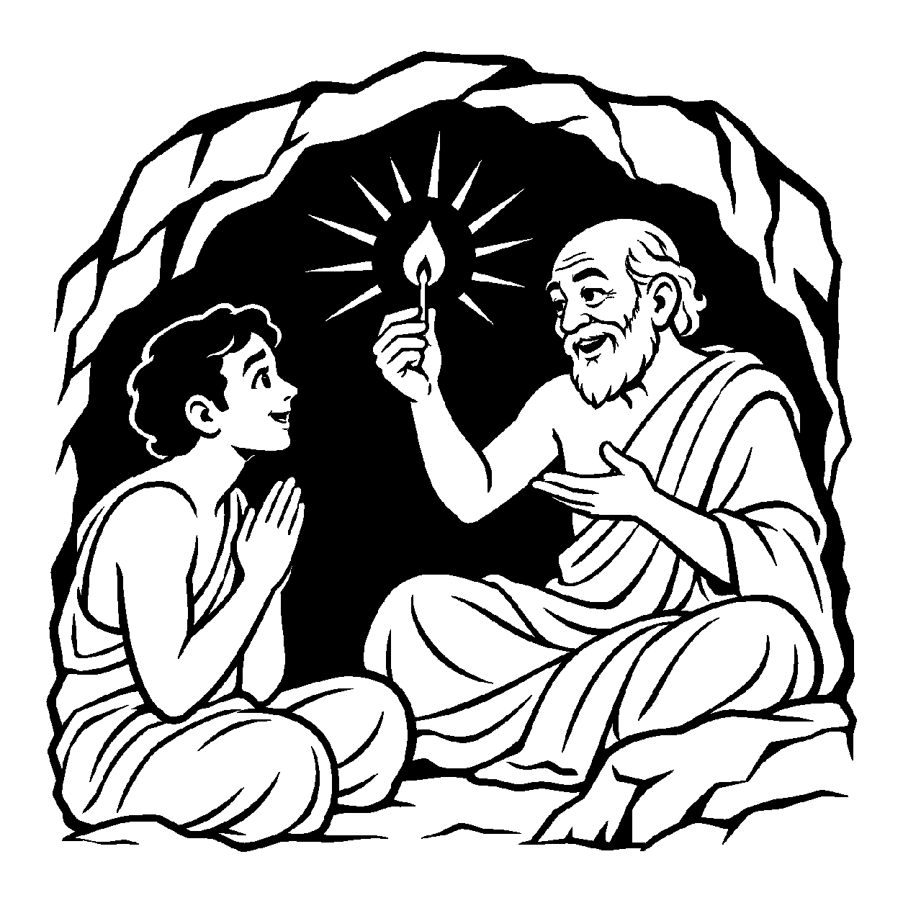

ઘનઘોર અંધારી રાત્રે એક નાની ઝૂંપડીમાં માટીનો એક નાનકડો કોડિયારૂપી દીવો બળી રહ્યો છે. તેની આસપાસ ચાર હાથ જેટલું અજવાળું ફેલાયેલું છે. ઝૂંપડીમાં રહેતો ગરીબ વૃદ્ધ હરખાઈને બોલે છે: "આ દીવો જ અમારો સૂર્ય છે, આણે અમારા ઘરમાં પૂર્ણ દિવસ ઉગાડી દીધો છે!" વાસ્તવમાં તે દીવો કેવળ બે ટીપાં તેલ અને રૂની વાટવાળું અલ્પ અગ્નિતત્વ છે, જ્યારે સૂર્ય એ ત્રિલોકને અજવાળનારું પૂર્ણ તેજપિંડ છે. બંને અગ્નિ જાતિના જ હોવા છતાં અલ્પ તેજ પર પૂર્ણ તેજનો આરોપ કરવો એ ભાવનાત્મક લોકવ્યવહાર છે. તેવી જ રીતે જ્યારે ચેતનાના ક્ષાયોપશમિક, અલ્પ અને મર્યાદિત 'સમ્યક્ મતિજ્ઞાન' પર અખંડ, સર્વજ્ઞ અને સર્વદર્શી 'કેવળજ્ઞાન'નો ઔપચારિક આરોપ મૂકીને — "સમ્યક્ મતિજ્ઞાન જ કેવળજ્ઞાન છે, આ અંતરનો બોધ જ પૂર્ણ મુક્તિ છે" — એમ સમાન ચેતન જાતિના અલ્પ જ્ઞાનમાં પૂર્ણ જ્ઞાનનો ઉપચાર કરવામાં આવે, ત્યારે તેને 'સ્વજાત્યલ્પે સ્વજાતિપૂર્ણોપચારક વ્યવહાર' કહેવાય છે.
મતિજ્ઞાન અને કેવળજ્ઞાન બંને આત્માના જ્ઞાનગુણની જ અવસ્થાઓ છે. મતિજ્ઞાન અલ્પ છે અને કેવળજ્ઞાન પૂર્ણ છે. જ્યારે જીવને સમ્યગ્દર્શન સાથે સમ્યક્ મતિજ્ઞાન પ્રગટે છે, ત્યારે તેમાં ભાવી કેવળજ્ઞાનનું બીજ રોપાઈ જાય છે. જે અંશને પામી ગયો તે અંશીને પામવાનો જ છે. આ કારણથી શાસ્ત્રોમાં સાધકના પ્રાથમિક સમ્યગ્જ્ઞાનને પણ 'કેવળજ્ઞાન સમાન' કહીને બિરદાવવામાં આવે છે. આ ઉપચાર સાધકને પરમ ઉત્સાહ અને આત્મવિશ્વાસ પ્રદાન કરે છે.
આ નય સાધકને સમજાવે છે કે સાચી દિશામાં પડેલું એક નાનું પગલું પણ પૂર્ણતાનું જ સ્વરૂપ છે; માટે અલ્પ સાધનાને તુચ્છ ન ગણતાં તેને પૂર્ણતા તરફ વિકસાવવી.
મતિજ્ઞાન અલ્પ રૂપ છે, કેવળજ્ઞાન અપાર;
સમ્યક્ દર્શન પામતાં, કેવળનો વિસ્તાર.
બીજ મહીં વટવૃક્ષ છે, અંશે અંશી રૂપ;
સ્વજાતિ ઉપચાર સમજી, લહે સ્વભાવ અનૂપ.
સાધકને સમજાવે છે કે સાચી દિશામાં પડેલું એક નાનું પગલું પણ પૂર્ણતાનું જ સ્વરૂપ છે; માટે અલ્પ સાધનાને તુચ્છ ન ગણતાં તેને પૂર્ણતા તરફ વિકસાવવી.

ધ્યાનમાર્ગનો એક યુવાન સાધક સુબોધ વર્ષોથી ધ્યાનમાં બેસતો હતો. એક દિવસ તેના અંતરમાં એક ક્ષણ માટે અત્યંત નિર્મળ શાંતિ અને આત્મબોધની નાની ઝલક પ્રગટી. પરંતુ ક્ષણવાર પછી તે ઝલક શમી ગઈ અને ફરી સામાન્ય વિચારો શરૂ થઈ ગયા. સુબોધ રડવા જેવો થઈ ગયો: "અરેરે! મને કેવળ એક ક્ષણ માટે જ જ્ઞાન થયું અને તે તરત જ જતું રહ્યું! જ્યાં સુધી મને ત્રિલોકને જાણનારું અખંડ કેવળજ્ઞાન ન થાય, ત્યાં સુધી આ નાનકડી ક્ષણિક ઝલકનું શું મૂલ્ય? આ તો કેવળ રણમાં પાણીના એક ટીપા જેવું છે!" તે પોતાના અલ્પ જ્ઞાનથી હતાશ થઈને સાધના છોડવા તૈયાર થયો.
તે સમયે તેના વયોવૃદ્ધ ગુરુદેવે તેને એક ઘોર અંધારી, ઊંડી ગુફામાં લઈ ગયા. ગુફામાં હાથ પણ દેખાતો નહોતો. ગુરુએ ખિસ્સામાંથી એક નાની દીવાસળી કાઢીને સળગાવી. ક્ષણવારમાં ગુફાનો સદીઓ જૂનો અંધકાર દૂર થઈ ગયો અને બંનેના ચહેરા સ્પષ્ટ દેખાયા. ગુરુએ પૂછ્યું: "સુબોધ! શું આ નાનકડી દીવાસળી આખી ગુફાનો અંધકાર હટાવવા માટે સૂર્ય જેટલી જ સમર્થ નથી?" સુબોધે નમ્રતાથી કહ્યું: "હા ગુરુજી, અંધકાર તો નાસી ગયો!" ગુરુએ કહ્યું: "વત્સ! સ્વજાત્યલ્પે સ્વજાતિપૂર્ણોપચારક વ્યવહારને ઓળખ! તને જે અંતરમાં એક ક્ષણનો બોધ થયો, તે સમ્યક્ મતિજ્ઞાન હતું. તે ભલે અલ્પ હતું, પણ તેનો સ્વભાવ કેવળજ્ઞાન જેવો જ અંધકારનાશક હતો! વ્યવહારમાં એ નાનકડી ઝલકને પણ 'કેવળજ્ઞાન' કહેવાય છે કારણ કે જે દીવાસળી સળગી છે તે જ દીવો બનીને આખા ઓરડાને સદા અજવાળશે!" સુબોધની આંખો ઊઘડી ગઈ. અલ્પ અનુભૂતિનો મહિમા સમજાતાં તેનો ઉત્સાહ બેવડાઈ ગયો. તે આત્મસાધનામાં સ્થિર થયો અને તેનું ચિત્ત પરમ વિશ્રામમાં શાંત થઈ ગયું.
જો જીવ અલ્પ મતિજ્ઞાનને જ સર્વથા પૂર્ણ કેવળજ્ઞાન માનીને સંતોષ માની બેસે, તો તે આગળ વધતો અટકી જઈ અહંકારી બની જાય છે.
આ નય અલ્પ જ્ઞાનની કદર કરીને સાધકને પૂર્ણતા તરફ અવિરત ગતિ કરવાની પ્રેરણા આપે છે, જેથી જીવ હું-પણાને ખોઈને પોતાના આત્મસ્વરૂપમાં સ્થિર થાય છે.